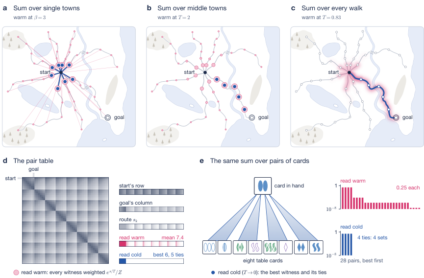
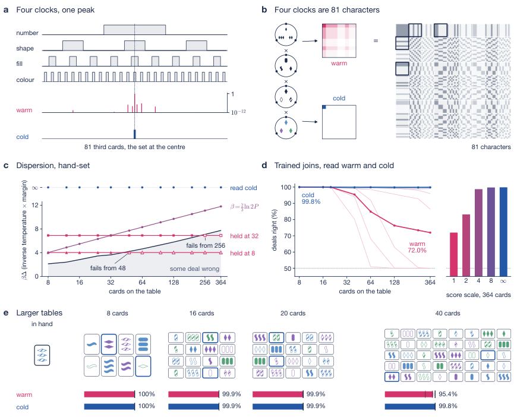

Correctness proofs of nine trained cold-attention blocks, which chain family relations at every context size, are checked in Lean 4 as theorems over finite weight tables.
Abstract
Attention scores candidate supports of an answer, which we call witnesses, and reads the scores at a temperature. We build a higher-order attention layer whose state lives on pairs of items: for a pair (a, b), each third item k is a witness judged through its legs (a, k) and (k, b). It reads witnesses at zero temperature, keeping the best and the number tied with it, passes on only bits comparing such counts, rebuilds its pair state from the input and these bits at every loop, and is trained from answers alone. Each choice removes one way soft attention fails at size: dispersed weight, unresolved gaps between learned scores, and a drifting soft state. In maximum retrieval it is right on at least 99.95% of sets 1,000 times larger than in training, on all ten seeds; trained with a soft count, the same network falls to 42% at 4,096 items. On CLRS-30 without hints, a general form of the layer (half its channels read at zero temperature, numbers embedded, state carried) beats the best published model, which uses hints on some tasks; the full cold layer is exact on every test input of 9 of the 12 tasks whose answers depend on numbers only through comparisons. From yes-or-no answers it decides 2-SAT and two-colouring exactly at 500 variables and, as our theory predicts, not parity equations. Beside a frozen 7B language model it chains family relations exactly at 1,000 statements after training on 16, where the model alone falls to 44%; finite checks on the weights prove every block that learned correct at every size, on acyclic contexts and given what the model reads. On CLUTRR it is right on every story of five to ten relations given the graphs, learning the 62 rules exactly; from text, with the model frozen, no hand-written rule and only a small read-in trained, it lifts an open 7B model from 33% to 65%, above every system we found without hand-written rules except frontier reasoning models.
Problem
Soft attention loses accuracy as inputs grow, through dispersed weight, unresolved gaps between learned scores, and a drifting soft state. Neural algorithm executors trained on small inputs therefore rarely stay exact far beyond their training sizes.
Approach
A higher-order attention layer keeps a state for each pair of items and judges each third item as a witness through its two legs. It reads witnesses at zero temperature, keeping the best score and the number of witnesses tied with it, and passes on only bits that compare such counts. It rebuilds its pair state from the input and these bits at every loop and is trained from answers alone. Because a trained block is a finite table, two finite checks on its weights prove it correct at every input size. For nine runs these checks are also proved in Lean 4, while the table itself is extracted from the weights outside Lean.

Figure 1: Fig. 1 | One sum over witnesses, read warm and read cold. Each panel forms the sum Z_{T}=\sum_{w}e^{s(w)/T} over one family of witnesses and reads it in two ways: warm, every witness weighted by e^{s(w)/T}/Z_{T} (rose: area, glow or tint), and cold, T\to 0 , which keeps the best witness and the number of witnesses tied with it (cobalt). Nothing is trained. The map is one search question
Results
On maximum retrieval the layer is right on at least 99.95% of sets up to 16,384 items, on all ten seeds, after training on at most 16 items. Without hints it beats the best published model on CLRS-30 and decides 2-SAT and two-colouring exactly at 500 variables. Beside a frozen 7B language model it chains ancestor relations exactly at 1,000 statements, and it lifts CLUTRR accuracy from 33% to 65%. Every trained block that learned correctly is proven correct at every size on acyclic contexts, given what the model reads, and nine of these proofs are checked in Lean.

Figure 2: Fig. 2 | SET: read warm, the weight spreads; read cold, the set is kept. A deal is a card in hand and a table of cards, and the question is whether two table cards complete a set with the card in hand. a , One join trained in the first version of this paper 4 , with the card in hand and one table card fixed: each attribute’s clock over the 81 possible third cards (number, shape, fill and